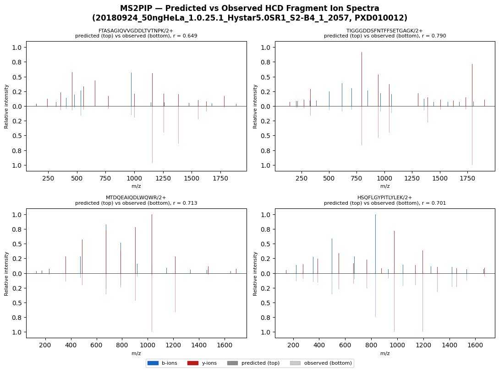
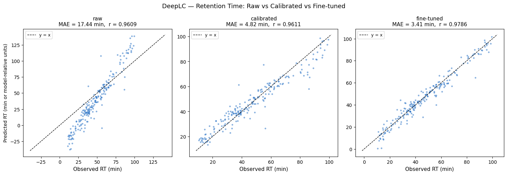
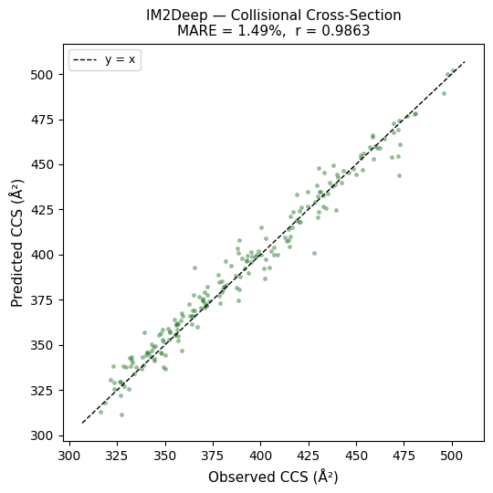
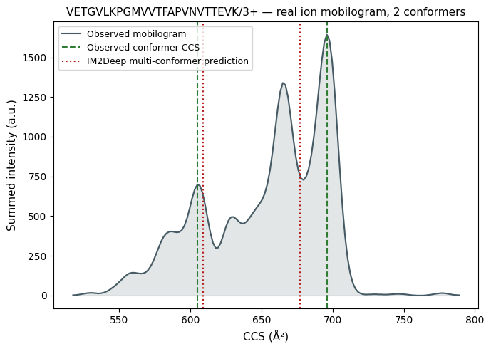

# Install dependencies (run once)
# !pip install ms2pip deeplc im2deep psm-utils tensorflow-cpu remotezip alphatims python-lzfMS2PIP, DeepLC & IM2Deep: Multi-modal Peptide Property Prediction
Tool versions: ms2pip, deeplc, im2deep — latest PyPI releases (see install cell) Estimated time: 30 min Level: intermediate Last tested: 2026-06-10
Abstract
This tutorial predicts three complementary LC-IM-MS/MS properties for real HeLa-derived peptides using CompOmics tools: fragment ion intensities with MS2PIP, retention time with DeepLC, and collisional cross-section with IM2Deep. Each prediction is benchmarked against real experimental data: an MS2PIP spectrum is compared to an observed, identified spectrum pulled from the raw ProteomeXchange deposition; DeepLC predictions are compared raw, calibrated, and fine-tuned; and IM2Deep’s multi-conformer model is compared to a real bimodal ion mobilogram extracted directly from a Bruker .d file.
| Tool | Prediction | Model |
|---|---|---|
| MS2PIP | Fragment ion intensities (b/y) | timsTOF |
| DeepLC | Retention time (RT) | Default (raw / calibrated / fine-tuned) |
| IM2Deep | Collisional cross-section (CCS) | TIMS - single- and multi-conformer |
Learning objectives
By the end of this tutorial, you will be able to:
- Convert MaxQuant modified-sequence notation to ProForma
- Predict fragment ion intensities with MS2PIP and compare them to a real observed, identified spectrum
- Predict retention time with DeepLC in raw, calibrated, and fine-tuned modes, and compare their accuracy against observed RT
- Predict CCS values with IM2Deep’s single-conformer model and evaluate them against observed CCS
- Extract a real ion mobilogram from a Bruker
.dfile and use IM2Deep’s multi-conformer model to predict the CCS of two co-occurring peptide conformations
Prerequisites
- Familiarity with basic Python and pandas
- Basic understanding of peptide fragmentation (b/y-ions) and LC-IM-MS/MS
Input data
- The Meier et al. IM-CCS dataset, hosted on ProteomicsML. It was acquired on a timsTOF Pro instrument and covers three ProteomeXchange depositions (PXD010012, PXD019086, PXD017703): 718 K high-confidence PSMs with observed retention time and CCS. The dataset (~23 MB) is downloaded directly from the ProteomicsML GitHub repository in Section 2. This dataset is used for the bulk DeepLC and IM2Deep benchmarks.
- Raw MaxQuant search results and, for one example, the raw Bruker
.dfile, from a single run of PXD010012 (the same deposition underlying part of the Meier dataset above) — downloaded on demand in Sections 4 and 6 to obtain real observed spectra and a real ion mobilogram.
1. Setup
import io
import os
import re
import warnings
import zipfile
import matplotlib.pyplot as plt
import matplotlib.ticker as ticker
import numpy as np
import pandas as pd
import requests
import tqdm
from scipy.ndimage import gaussian_filter1d
from scipy.signal import find_peaks
from scipy.stats import pearsonr
import alphatims.bruker
import deeplc
import im2deep
import remotezip
from ms2pip import predict_batch
from psm_utils import PSM, PSMList
warnings.filterwarnings("ignore") # silence noisy alphatims/pandas warnings
class _SilentTqdm(tqdm.tqdm):
"""Suppress tqdm progress bars (e.g. from alphatims) for cleaner notebook output."""
def __init__(self, *args, **kwargs):
kwargs["disable"] = True
super().__init__(*args, **kwargs)
tqdm.tqdm = _SilentTqdm%matplotlib inline2. Dataset
The Meier et al. IM-CCS dataset was acquired on a timsTOF Pro instrument and covers three ProteomeXchange depositions (PXD010012, PXD019086, PXD017703). It contains 718 K high-confidence PSMs with four key measured properties:
| Column | Description |
|---|---|
Modified sequence |
MaxQuant notation: underscores mark the termini, modifications in parentheses, e.g. _AAEM(ox)K_ |
Charge |
Precursor charge state |
Retention time |
In seconds when PT=False (standard 120 min gradient); in minutes when PT=True |
CCS |
Collisional cross-section in Ų, measured by TIMS |
PT |
True = phosphopeptide-enriched short gradient; False = standard proteome run |
We download the dataset directly from the ProteomicsML GitHub repository.
url = (
"https://raw.githubusercontent.com/ProteomicsML/ProteomicsML/main"
"/datasets/ionmobility/Meier_IM_CCS/combined_sm.zip"
)
print("Downloading dataset (~23 MB)...")
response = requests.get(url, timeout=120)
with zipfile.ZipFile(io.BytesIO(response.content)) as z:
df_raw = pd.read_csv(z.open("combined_sm.csv"))
print(f"Loaded {len(df_raw):,} PSMs")
df_raw.head()Downloading dataset (~23 MB)...
Loaded 718,917 PSMs| Unnamed: 0 | Modified sequence | Charge | Mass | Intensity | Retention time | CCS | PT | |
|---|---|---|---|---|---|---|---|---|
| 0 | 0 | _(ac)AAAAAAAAAAGAAGGR_ | 2 | 1239.63200 | 149810.0 | 70.140 | 409.092529 | False |
| 1 | 1 | _(ac)AAAAAAAAEQQSSNGPVKK_ | 2 | 1810.91734 | 21349.0 | 19.645 | 481.229248 | True |
| 2 | 2 | _(ac)AAAAAAAGAAGSAAPAAAAGAPGSGGAPSGSQGVLIGDR_ | 3 | 3144.55482 | 194000.0 | 3947.700 | 772.098083 | False |
| 3 | 3 | _(ac)AAAAAAAGDSDSWDADAFSVEDPVRK_ | 2 | 2634.18340 | 6416400.0 | 94.079 | 573.213196 | False |
| 4 | 4 | _(ac)AAAAAAAGDSDSWDADAFSVEDPVRK_ | 3 | 2634.18340 | 5400600.0 | 94.841 | 635.000549 | False |
3. Preprocessing
We apply the following steps:
- Filter to charge-2 PSMs from the 120 min gradient runs (
PT=False), keeping RTs between 10 and 110 min (600–6600 s), and removing peptides shorter than 8 or longer than 20 residues. This gives a representative set of well-measured tryptic peptides across the gradient. - Convert MaxQuant modified sequences to ProForma notation, which is the unified format accepted by all three tools. For example:
_AAEM(ox)K_(charge 2) →AAEM[Oxidation]K/2Modifications are placed in square brackets immediately after the modified residue; the charge state follows a/suffix. N-terminal modifications use a-separator, e.g._(ac)PEPTIDE_→[Acetyl]-PEPTIDE/2. - Sample 200 PSMs for the predictions.
MQ_MOD_MAP = {
"ac": "Acetyl",
"ox": "Oxidation",
"ca": "Carbamidomethyl",
"de": "Deamidated",
"ph": "Phospho",
}
def mq_to_proforma(mq_seq: str, charge: int) -> str:
"""Convert MaxQuant modified sequence to ProForma notation."""
seq = mq_seq.strip("_")
nterm_m = re.match(r"^\((\w+)\)", seq)
nterm = ""
if nterm_m:
nterm = f"[{MQ_MOD_MAP.get(nterm_m.group(1), nterm_m.group(1))}]-"
seq = seq[nterm_m.end() :]
seq = re.sub(
r"\((\w+)\)",
lambda m: f"[{MQ_MOD_MAP.get(m.group(1), m.group(1))}]",
seq,
)
return f"{nterm}{seq}/{charge}"
# Filter
data = df_raw[
(df_raw["PT"] == False)
& df_raw["Retention time"].between(600, 6600)
& (df_raw["Charge"] == 2)
].copy()
data["proforma"] = data.apply(
lambda r: mq_to_proforma(r["Modified sequence"], r["Charge"]), axis=1
)
data["sequence"] = (
data["Modified sequence"].str.strip("_").str.replace(r"\(\w+\)", "", regex=True)
)
data["rt_min"] = data["Retention time"] / 60
data = data[data["sequence"].str.len().between(8, 20)]
sample = data.sample(200, random_state=42).reset_index(drop=True)
print(f"Filtered dataset: {len(data):,} PSMs")
print(f"Working sample: {len(sample)} PSMs")
sample[["Modified sequence", "proforma", "rt_min", "CCS"]].head()Filtered dataset: 36,477 PSMs
Working sample: 200 PSMs| Modified sequence | proforma | rt_min | CCS | |
|---|---|---|---|---|
| 0 | _NQHLQEQVAM(ox)QR_ | NQHLQEQVAM[Oxidation]QR/2 | 14.670333 | 415.277649 |
| 1 | _DVAAAAADSPNK_ | DVAAAAADSPNK/2 | 14.732667 | 348.645264 |
| 2 | _ASSQVNVEGQSR_ | ASSQVNVEGQSR/2 | 16.557833 | 365.347382 |
| 3 | _M(ox)PLLELGGETTPPLSTER_ | M[Oxidation]PLLELGGETTPPLSTER/2 | 67.748333 | 464.870453 |
| 4 | _DPSGDFSVR_ | DPSGDFSVR/2 | 29.218333 | 328.006927 |
# Build a shared PSMList for the 200-peptide sample, used by DeepLC and IM2Deep below
psm_list = PSMList(
psm_list=[
PSM(
peptidoform=row["proforma"],
spectrum_id=str(i),
retention_time=row["rt_min"],
)
for i, row in sample.iterrows()
]
)
print(f"Built PSMList with {len(psm_list)} PSMs")Built PSMList with 200 PSMs4. MS2PIP: Fragment Ion Intensity Prediction
MS2PIP predicts the relative intensities of b- and y-fragment ions produced by collisional fragmentation (HCD). The two ion series are complementary: b-ions retain the peptide N-terminus, y-ions retain the C-terminus. For tryptic peptides ending in Lys or Arg, the y-ion series is typically dominant because the basic C-terminal residue stabilises the y-ion charge.
We use the timsTOF model, which was trained on a large TOF fragmentation dataset and supports unmodified and commonly modified peptides (oxidation, carbamidomethylation, acetylation, phosphorylation).
Note: the Meier dataset used above contains only RT and CCS values, not raw MS2 spectra, so it cannot provide an observed spectrum to compare against. Instead, we pull a handful of confidently identified PSMs — with their matched, observed fragment ions — directly from the MaxQuant search results of one raw run in PXD010012, and predict a spectrum for each with MS2PIP.
4.1 Downloading real observed spectra
MaxQuant’s msms.txt search result table stores, for every identified spectrum, the list of matched fragment ions (Matches), their m/z (Masses), and their observed intensities (Intensities) — i.e. a ready-made observed spectrum for every PSM. We download this file for a single small HeLa run (HeLa_5min, ~50 ng on column) from PXD010012 and pick the 4 highest-confidence, unmodified, charge-2 PSMs (by number of matched fragment ions) as our reference spectra.
We use remotezip to stream only the single file we need out of the PRIDE FTP archive, rather than downloading the full submission.
RAW_RUN = "20180924_50ngHeLa_1.0.25.1_Hystar5.0SR1_S2-B4_1_2057"
MSMS_URL = (
"https://ftp.pride.ebi.ac.uk/pride/data/archive/2018/11/PXD010012/HeLa_5min_txt.zip"
)
MSMS_PATH = "data/msms_HeLa_5min.txt"
if not os.path.exists(MSMS_PATH):
os.makedirs("data", exist_ok=True)
print("Downloading msms.txt (~100 MB, streamed from the PRIDE archive)...")
with remotezip.RemoteZip(MSMS_URL) as zf:
with zf.open("txt/msms.txt") as src, open(MSMS_PATH, "wb") as dst:
dst.write(src.read())
msms = pd.read_csv(MSMS_PATH, sep="\t", low_memory=False)
msms = msms[
(msms["Raw file"] == RAW_RUN)
& (msms["Reverse"] != "+")
& (msms["PEP"] < 1e-6)
& (msms["Charge"] == 2)
& (msms["Modifications"] == "Unmodified")
& msms["Sequence"].str.len().between(8, 20)
]
msms = msms.sort_values("Number of Matches", ascending=False).drop_duplicates(
"Modified sequence"
)
obs_psms = msms.head(4).reset_index(drop=True)
obs_psms["proforma"] = obs_psms.apply(
lambda r: mq_to_proforma(r["Modified sequence"], r["Charge"]), axis=1
)
ION_RE = re.compile(r"^([by])(\d+)$")
def parse_observed_peaks(row):
"""Keep only primary (non-neutral-loss) b/y matches."""
peaks = []
for match, mass, intensity in zip(
row["Matches"].split(";"),
row["Masses"].split(";"),
row["Intensities"].split(";"),
):
m = ION_RE.match(match)
if m:
peaks.append(
{
"ion_type": m.group(1),
"position": int(m.group(2)),
"mz": float(mass),
"intensity": float(intensity),
}
)
return pd.DataFrame(peaks)
obs_peaks = {i: parse_observed_peaks(row) for i, row in obs_psms.iterrows()}
print(f"Selected {len(obs_psms)} reference PSMs from {RAW_RUN}")
obs_psms[["Modified sequence", "proforma", "Score", "Number of Matches"]]Selected 4 reference PSMs from 20180924_50ngHeLa_1.0.25.1_Hystar5.0SR1_S2-B4_1_2057| Modified sequence | proforma | Score | Number of Matches | |
|---|---|---|---|---|
| 0 | _FTASAGIQVVGDDLTVTNPK_ | FTASAGIQVVGDDLTVTNPK/2 | 224.97 | 47 |
| 1 | _TIGGGDDSFNTFFSETGAGK_ | TIGGGDDSFNTFFSETGAGK/2 | 243.80 | 47 |
| 2 | _MTDQEAIQDLWQWR_ | MTDQEAIQDLWQWR/2 | 286.01 | 46 |
| 3 | _HSQFLGYPITLYLEK_ | HSQFLGYPITLYLEK/2 | 215.61 | 45 |
obs_psm_list = PSMList(
psm_list=[
PSM(peptidoform=row["proforma"], spectrum_id=str(i))
for i, row in obs_psms.iterrows()
]
)
results = list(predict_batch(obs_psm_list, model="timsTOF"))
print(f"MS2PIP: {len(results)} peptides predicted")
ms2pip_rows = []
for i, result in enumerate(results):
for ion_type in ("b", "y"):
for pos, (mz, intensity) in enumerate(
zip(result.theoretical_mz[ion_type], result.predicted_intensity[ion_type]),
start=1,
):
ms2pip_rows.append(
{
"sample_idx": i,
"ion_type": ion_type,
"position": pos,
"mz": float(mz),
"intensity": 2 ** float(intensity),
}
)
ms2pip_df = pd.DataFrame(ms2pip_rows)
print(f"Total ions predicted: {len(ms2pip_df):,}")MS2PIP: 4 peptides predicted
Total ions predicted: 130def plot_predicted_vs_observed(ax, sample_idx, ms2pip_df, obs_df, row):
pred = ms2pip_df[ms2pip_df["sample_idx"] == sample_idx]
pred_max = pred["intensity"].max()
obs_max = obs_df["intensity"].max()
for ion_type, color in (("b", "#1565C0"), ("y", "#B71C1C")):
p = pred[pred["ion_type"] == ion_type]
ax.bar(p["mz"], p["intensity"] / pred_max, width=3, color=color, alpha=0.9)
o = obs_df[obs_df["ion_type"] == ion_type]
ax.bar(o["mz"], -(o["intensity"] / obs_max), width=3, color=color, alpha=0.4)
# Pearson r on ions matched between prediction and observation
merged = pred.merge(obs_df, on=["ion_type", "position"], suffixes=("_pred", "_obs"))
r, _ = pearsonr(merged["intensity_pred"], merged["intensity_obs"])
ax.axhline(0, color="black", linewidth=0.5)
ax.set_xlabel("m/z", fontsize=8)
ax.set_ylabel("Relative intensity", fontsize=8)
ax.set_title(
f"{row['Sequence']}/{int(row['Charge'])}+\n"
f"predicted (top) vs observed (bottom), r = {r:.3f}",
fontsize=8,
)
ax.yaxis.set_major_formatter(ticker.FuncFormatter(lambda x, _: f"{abs(x):.1f}"))
handles = [
plt.Rectangle((0, 0), 1, 1, color="#1565C0", label="b-ions"),
plt.Rectangle((0, 0), 1, 1, color="#B71C1C", label="y-ions"),
plt.Rectangle((0, 0), 1, 1, color="gray", alpha=0.9, label="predicted (top)"),
plt.Rectangle((0, 0), 1, 1, color="gray", alpha=0.4, label="observed (bottom)"),
]
fig, axes = plt.subplots(2, 2, figsize=(11, 8))
for ax, idx in zip(axes.flat, range(len(obs_psms))):
plot_predicted_vs_observed(ax, idx, ms2pip_df, obs_peaks[idx], obs_psms.iloc[idx])
fig.legend(handles=handles, loc="lower center", ncol=4, fontsize=8, bbox_to_anchor=(0.5, -0.02))
fig.suptitle(
"MS2PIP — Predicted vs Observed HCD Fragment Ion Spectra\n"
f"({RAW_RUN}, PXD010012)",
fontsize=12,
fontweight="bold",
)
plt.tight_layout()
plt.show()
5. DeepLC: Retention Time Prediction
DeepLC predicts peptide retention time using a convolutional neural network. The model encodes the peptide as a series of overlapping 3-mer amino acid windows, with modification information embedded at each position.
Because RT depends on the specific LC gradient, column chemistry, and instrument setup, DeepLC outputs are in model-relative units and need to be adapted to a specific LC system before they are meaningful. We compare three ways of doing so:
- Raw (
deeplc.predict): the model’s native output, with no adaptation at all. - Calibrated (
deeplc.predict_and_calibrate): a monotonic spline is fitted between the raw predictions and the observed RTs of a set of anchor PSMs, and applied to all predictions. This only rescales the output — the underlying model weights are untouched. - Fine-tuned (
deeplc.finetune_and_predict): the model itself is fine-tuned (further trained) on the anchor PSMs before predicting, so it can also correct sequence-specific errors that a simple rescaling cannot.
We use 50 randomly selected PSMs as anchors for both calibration and fine-tuning, and predict all 200 with each of the three strategies.
Practical note: in a real analysis you would typically use hundreds of confidently identified PSMs from the same LC run as anchors. Here we use 50 for demonstration purposes.
# Select 50 anchor PSMs (retention_time already set) for calibration and fine-tuning
cal_indices = sample.sample(50, random_state=7).index.tolist()
cal_psm_list = PSMList(psm_list=[psm_list[i] for i in cal_indices])
obs_rt = sample["rt_min"].values
pred_rt_raw = deeplc.predict(psm_list)
pred_rt_cal = deeplc.predict_and_calibrate(psm_list, cal_psm_list)
pred_rt_ft = deeplc.finetune_and_predict(psm_list, cal_psm_list)
deeplc_results = {}
for label, pred_rt in (
("raw", pred_rt_raw),
("calibrated", pred_rt_cal),
("fine-tuned", pred_rt_ft),
):
mae = np.mean(np.abs(pred_rt - obs_rt))
r, _ = pearsonr(pred_rt, obs_rt)
deeplc_results[label] = {"pred_rt": pred_rt, "mae": mae, "r": r}
print(f"DeepLC {label:>10} MAE = {mae:6.2f} min | Pearson r = {r:.4f}")DeepLC raw MAE = 17.44 min | Pearson r = 0.9609
DeepLC calibrated MAE = 4.82 min | Pearson r = 0.9611
DeepLC fine-tuned MAE = 3.41 min | Pearson r = 0.9786fig, axes = plt.subplots(1, 3, figsize=(15, 5.2))
for ax, (label, res) in zip(axes, deeplc_results.items()):
pred_rt = res["pred_rt"]
lo = min(obs_rt.min(), pred_rt.min()) - 2
hi = max(obs_rt.max(), pred_rt.max()) + 2
ax.scatter(obs_rt, pred_rt, alpha=0.5, s=12, color="#1565C0", linewidths=0)
ax.plot([lo, hi], [lo, hi], "k--", linewidth=1, label="y = x")
ax.set_xlabel("Observed RT (min)", fontsize=11)
ax.set_title(
f"{label}\nMAE = {res['mae']:.2f} min, r = {res['r']:.4f}", fontsize=11
)
ax.legend(fontsize=9)
axes[0].set_ylabel("Predicted RT (min or model-relative units)", fontsize=10)
fig.suptitle("DeepLC — Retention Time: Raw vs Calibrated vs Fine-tuned", fontsize=13)
plt.tight_layout()
plt.show()
Interpreting the RT prediction
Each point is one PSM; the dashed line is the ideal y = x diagonal. Scatter around the diagonal reflects prediction error. A Pearson r close to 1 means the model correctly ranks peptides by elution order; MAE quantifies the absolute error in minutes.
Raw predictions already correlate well with observed RT (peptides are ranked correctly), but the absolute values are off — they are model-relative, not tied to this specific gradient. Calibration fixes this with a single spline fit on the anchor PSMs, without touching the underlying model, and already brings the MAE down to a few minutes. Fine-tuning adapts the model weights themselves to the anchor PSMs, which can further reduce the error, especially for peptides whose elution behaviour is not well captured by the spline alone (e.g. after a gradient or column change) — at the cost of extra compute for the fine-tuning step.
For a 120 min gradient, MAE ≈ 4 min corresponds to a relative error of roughly 4 %. This is sufficient for downstream applications such as peptide rescoring (Percolator, MS²Rescore) and DIA library generation, where the goal is accurate rank ordering rather than exact minute-level placement.
Systematic curvature in the scatter (S-shaped residuals) would indicate that the calibration spline needs more anchor PSMs or a wider RT range to anchor on.
6. IM2Deep: Collisional Cross-Section Prediction
IM2Deep predicts the collisional cross-section (CCS) of peptide ions. CCS is a measure of how a peptide ion’s three-dimensional shape affects its drift time through a buffer gas in an ion mobility device. It is an intrinsic physicochemical property of a peptide ion at a given charge state and does not depend on the LC gradient — which is why IM2Deep can predict absolute CCS values without calibration.
CCS is measured on timsTOF instruments using trapped ion mobility spectrometry (TIMS). Combined with RT, it provides a second orthogonal dimension for peptide identification and scoring. IM2Deep uses the same PSMList interface as DeepLC.
# Reuse the PSMList built for MS2PIP (includes charge encoded in ProForma string)
pred_ccs = im2deep.predict(psm_list)
obs_ccs = sample["CCS"].values
mare_ccs = np.mean(np.abs(pred_ccs - obs_ccs) / obs_ccs) * 100
r_ccs, _ = pearsonr(pred_ccs, obs_ccs)
print(f"IM2Deep MARE = {mare_ccs:.2f}% | Pearson r = {r_ccs:.4f}")IM2Deep MARE = 1.49% | Pearson r = 0.9863fig, ax = plt.subplots(figsize=(5.5, 5.5))
ax.scatter(obs_ccs, pred_ccs, alpha=0.5, s=12, color="#2E7D32", linewidths=0)
lo = min(obs_ccs.min(), pred_ccs.min()) - 5
hi = max(obs_ccs.max(), pred_ccs.max()) + 5
ax.plot([lo, hi], [lo, hi], "k--", linewidth=1, label="y = x")
ax.set_xlabel("Observed CCS (Ų)", fontsize=11)
ax.set_ylabel("Predicted CCS (Ų)", fontsize=11)
ax.set_title(
f"IM2Deep — Collisional Cross-Section\nMARE = {mare_ccs:.2f}%, r = {r_ccs:.4f}",
fontsize=11,
)
ax.legend(fontsize=9)
plt.tight_layout()
plt.show()
Interpreting the CCS prediction
CCS values for doubly charged tryptic peptides typically fall between 300 and 550 Ų, with larger peptides having higher CCS. The tight clustering around the diagonal (MARE < 2 %) reflects that CCS is largely determined by amino acid composition and sequence — properties that the model captures well.
6.1 Multiple conformers: a real bimodal ion mobilogram
A single peptide ion can populate more than one gas-phase conformation — for example through cis/trans isomerisation around a proline, or alternative intramolecular charge arrangements. Each conformation drifts through the TIMS cell at a different rate, so the same precursor can show up as two (or more) separated peaks in the ion mobility dimension, at the same m/z and (nearly) the same retention time. The single-conformer model used above always predicts one CCS value per peptide, so it cannot represent this. IM2Deep also ships a multi-conformer model that predicts two CCS values per peptide.
To demonstrate this on real data, we searched the MaxQuant evidence.txt table for the same run used in Section 4 for a peptide that was identified twice — same modified sequence, same charge, essentially the same retention time — but at two clearly different ion mobility values. This turned up:
VETGVLKPGMVVTFAPVNVTTEVK, charge 3+, m/z 839.13, RT ≈ 244.7-244.8 s, identified once at ion mobility index 321 and once at index 621.
We now extract the real ion mobilogram for this precursor directly from the Bruker .d file to see both conformers, and compare it to what the IM2Deep multi-conformer model predicts.
Note: this downloads ~1.4 GB (the
analysis.tdf/analysis.tdf_binpair for one raw file, extracted directly from the PRIDE FTP archive without downloading the full, much larger raw-data submission) and requiresalphatims. This is by far the heaviest step in the tutorial; it is cached to disk so it only runs once.
RAW_ZIP_URL = (
"https://ftp.pride.ebi.ac.uk/pride/data/archive/2018/11/PXD010012/HeLa_5min_raw.zip"
)
RAW_D_ENTRY = f"{RAW_RUN}.d/"
RAW_D_DIR = "data/2057.d"
if not os.path.exists(RAW_D_DIR):
os.makedirs(RAW_D_DIR, exist_ok=True)
print("Downloading analysis.tdf + analysis.tdf_bin (~1.4 GB)...")
with remotezip.RemoteZip(RAW_ZIP_URL) as zf:
for fname in ("analysis.tdf", "analysis.tdf_bin"):
with zf.open(RAW_D_ENTRY + fname) as src, open(
os.path.join(RAW_D_DIR, fname), "wb"
) as dst:
for chunk in iter(lambda: src.read(1 << 20), b""):
dst.write(chunk)
print(f" {fname} done")
print(f"Raw data available in {RAW_D_DIR}/")Raw data available in data/2057.d/CONFORMER_SEQUENCE = "VETGVLKPGMVVTFAPVNVTTEVK"
CONFORMER_CHARGE = 3
CONFORMER_MZ = 839.132859
RT_WINDOW = (238.0, 252.0) # seconds, covers both identifications
PPM_TOLERANCE = 20e-6
tims_data = alphatims.bruker.TimsTOF(RAW_D_DIR)
mz_lo = CONFORMER_MZ * (1 - PPM_TOLERANCE)
mz_hi = CONFORMER_MZ * (1 + PPM_TOLERANCE)
precursor_frame = tims_data[slice(*RT_WINDOW), :, 0, slice(mz_lo, mz_hi), "df"]
# Bin into a smoothed mobilogram and pick the two dominant conformer peaks
n_bins = 150
edges = np.linspace(
precursor_frame["mobility_values"].min() - 0.02,
precursor_frame["mobility_values"].max() + 0.02,
n_bins + 1,
)
mobility_axis = (edges[:-1] + edges[1:]) / 2
intensity_axis, _ = np.histogram(
precursor_frame["mobility_values"],
bins=edges,
weights=precursor_frame["intensity_values"],
)
intensity_smooth = gaussian_filter1d(intensity_axis, sigma=3)
bin_width = mobility_axis[1] - mobility_axis[0]
peak_idx, _ = find_peaks(
intensity_smooth,
height=intensity_smooth.max() * 0.3,
distance=int(0.09 / bin_width),
)
ccs_axis = im2deep.im2ccs(mobility_axis, CONFORMER_MZ, CONFORMER_CHARGE)
observed_ccs = np.sort(ccs_axis[peak_idx])
print(f"Observed conformer CCS values: {observed_ccs.round(1)} Ų")WARNING:root:WARNING: Acquisition software is Bruker otofControl, mz min/max values are assumed to be 5 m/z wider than defined in analysis.tdf!Observed conformer CCS values: [604.9 695.9] Ųconformer_psm_list = PSMList(
psm_list=[
PSM(
peptidoform=f"{CONFORMER_SEQUENCE}/{CONFORMER_CHARGE}",
spectrum_id="0",
)
]
)
predicted_ccs = np.sort(im2deep.predict(conformer_psm_list, multi=True))
print(f"IM2Deep multi-conformer predicted CCS: {predicted_ccs.round(1)} Ų")
fig, ax = plt.subplots(figsize=(7, 5))
ax.plot(ccs_axis, intensity_smooth, color="#455A64", linewidth=1.5, label="Observed mobilogram")
ax.fill_between(ccs_axis, intensity_smooth, color="#455A64", alpha=0.15)
for ccs in observed_ccs:
ax.axvline(ccs, color="#2E7D32", linestyle="--", linewidth=1.5)
for ccs in predicted_ccs:
ax.axvline(ccs, color="#B71C1C", linestyle=":", linewidth=1.5)
ax.plot([], [], color="#2E7D32", linestyle="--", label="Observed conformer CCS")
ax.plot([], [], color="#B71C1C", linestyle=":", label="IM2Deep multi-conformer prediction")
ax.set_xlabel("CCS (Ų)", fontsize=11)
ax.set_ylabel("Summed intensity (a.u.)", fontsize=11)
ax.set_title(
f"{CONFORMER_SEQUENCE}/{CONFORMER_CHARGE}+ — real ion mobilogram, "
f"{len(observed_ccs)} conformers",
fontsize=11,
)
ax.legend(fontsize=9)
plt.tight_layout()
plt.show()IM2Deep multi-conformer predicted CCS: [609. 677.1] Ų
Interpreting the multi-conformer prediction
The observed mobilogram shows two clearly separated peaks for the same precursor m/z — direct evidence of two co-occurring gas-phase conformations. Converting their apex mobility to CCS with the Mason-Schamp equation (im2deep.im2ccs) gives two observed CCS values, which line up well with the two values predicted by IM2Deep’s multi-conformer model, without using any information from this specific run. The single-conformer model used in Section 6 would only have predicted one value near the average of these two, missing the bimodality entirely.
This matters in practice: if a bimodal precursor is treated as a single feature during quantification, its intensity may be under- or over-estimated depending on which conformer’s mobility window is integrated, and a single predicted CCS is not enough to disambiguate between the two.
Key points
- MS2PIP, DeepLC, and IM2Deep all consume peptides in ProForma notation and predict a distinct physicochemical property from the sequence and charge state alone.
- MS2PIP’s predicted fragment ion intensities can be validated directly against observed, matched fragment ions from a real search result.
- DeepLC’s retention time predictions are model-relative; calibrating against a set of anchor PSMs with known RT already brings them onto the LC gradient’s scale, and fine-tuning the model on those same anchors can improve accuracy further.
- IM2Deep’s single-conformer CCS predictions require no calibration, because CCS is an intrinsic property of the peptide ion rather than a function of the LC gradient. Its multi-conformer model can additionally predict two CCS values for peptides that populate two distinct gas-phase conformations, as confirmed here with a real, bimodal ion mobilogram extracted from a Bruker
.dfile. - Together, these three predictors provide the feature set needed to build in silico spectral libraries or to rescore PSMs (see the MS²Rescore tutorial).
Next steps
- MS²Rescore tutorial: use these predictors as features to rescore real PSMs and improve identifications at a fixed FDR.
- MS2PIP documentation
- DeepLC documentation
- IM2Deep repository
References
- Gabriels et al., Nucleic Acids Research (2019). MS²PIP. doi:10.1093/nar/gkz299
- Bouwmeester et al., Nature Methods (2021). DeepLC. doi:10.1038/s41592-021-01301-5
- Meier et al., Nature Communications (2021). Source dataset (timsTOF IM-CCS). doi:10.1038/s41467-021-21352-8
- Meier et al., Journal of Proteome Research (2018). PASEF method and source raw data (PXD010012) used for the observed spectrum and ion mobilogram. doi:10.1021/acs.jproteome.7b00858